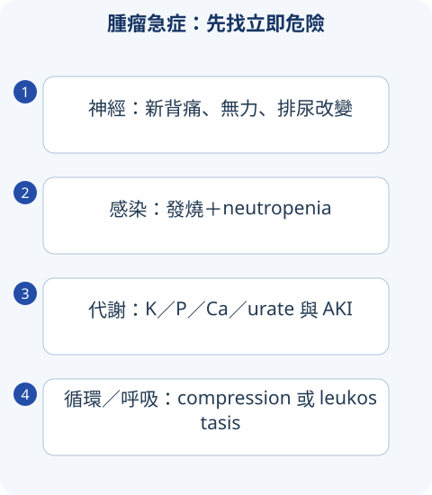

判讀圖解

1｜Tumor lysis syndrome
可在治療後，也可 spontaneous；依腫瘤量、增殖與腎功能先做風險分層。
| 變化 | 機轉／風險 | 處理概念 |
|---|---|---|
| 高 K／高 phosphate | 細胞內容物釋放 | ECG、急性電解質處置與持續重測。 |
| 高 uric acid／AKI | nucleic acids 分解與晶體／其他機轉 | 個別化補液與 urate-lowering；renal support 依病況。 |
| 低 Ca | phosphate 增加等 | 有症狀與無症狀處理不同，避免不當 Ca-P 沉積。 |
| Allopurinol vs rasburicase | 抑制新生成 vs 分解既有 urate | rasburicase 有 G6PD 相關禁忌與檢體處理要求。 |
寬表格可左右捲動
複習提醒
只看尿酸可能漏高鉀或 phosphate 危險；TLS risk 應在治療前評估。
2｜Compression 與 infection emergencies
影像與確診流程不能造成神經或循環危險的延誤。
| 情境 | 警訊 | 重點 |
|---|---|---|
| Spinal cord compression | 新背痛、無力、sphincter／感覺改變 | 緊急 MRI／專科評估；steroid／surgery／RT 依情境。 |
| SVC syndrome | 臉頸腫、靜脈擴張、呼吸道／神經問題 | 辨識 airway／brain 危險；組織診斷與 stent／oncologic treatment。 |
| Febrile neutropenia | neutropenia＋發燒，可無明顯局部徵象 | 及時評估、culture 與依風險經驗抗感染，不能等 culture 才治療。 |
| Hyperleukocytosis／leukostasis | 呼吸／神經與高 cell burden | 緊急 hematology，配 TLS／coagulation。 |
寬表格可左右捲動
3｜Paraneoplastic syndrome
由遠端 humoral／immune 機轉，不等於腫瘤直接侵犯或轉移。
| 表現 | 常見關聯／鑑別 |
|---|---|
| Hypercalcemia | PTHrP、osteolysis、calcitriol 等；高鈣先看 PTH。 |
| SIADH | small-cell lung 等，也可藥物／肺／CNS；需符合 hypotonic euvolemic 與排除條件。 |
| Ectopic ACTH | Cushing phenotype，與原發 adrenal／pituitary 分辨。 |
| Lambert-Eaton | proximal weakness／autonomic，與 small-cell 等；與 myasthenia gravis 分。 |
| 其他神經／皮膚／血液 | 症候羣、antibody、癌別風險與排除其他原因，避免每種症狀都直接歸因腫瘤。 |
寬表格可左右捲動
情境練習
化療後 K／phosphate／urate 上升且 Cr 惡化，要只處理尿酸嗎？
不可以。需整合 TLS、ECG／高鉀危險、Ca、volume、renal support 與腫瘤風險；各項監測與急性處置同步進行。
來源與版本
書籍學習來源：《國考分科詳解—醫學（三）》2020 年版，第 4 冊〈免疫・血液・腫瘤・家醫〉；本頁對應章節導讀位置為 PDF 第 241–256 頁（含封面，與書內印刷頁碼不同）。
依章節重寫比較與判讀重點；指引補充另列版本。圖解與情境練習為本站原創。核對日：2026/09/30。